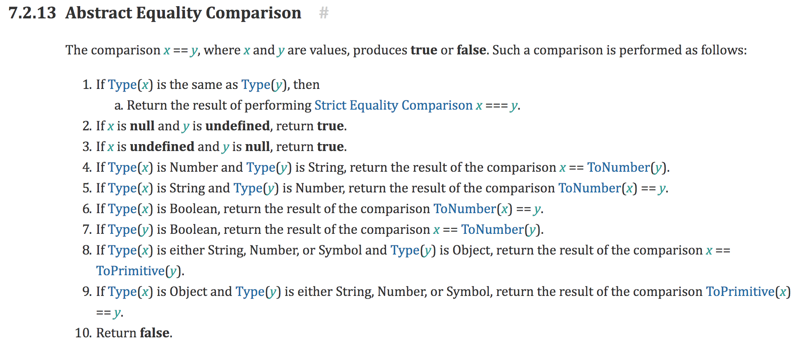

# JS 面试题
# 1、请简述 JavaScript 中的 this
- 1、在调用函数时使用 new 关键字，函数内的 this 是一个全新的对象。
- 2、如果 apply、call 或 bind 方法用于调用、创建一个函数，函数内的 this 就是作为参数传入这些方法的对象。
- 3、当函数作为对象里的方法被调用时，函数内的 this 是调用该函数的对象。比如当 obj.method()被调用时，函数内的 this 将绑定到 obj 对象。
- 4、如果调用函数不符合上述规则，那么 this 的值指向全局对象（global object）。浏览器环境下 this 的值指向 window 对象，但是在严格模式下，this 的值为 undefined。
- 如果符合上述多个规则，则较高的规则（1 号最高，4 号最低）将决定 this 的值。
- 如果该函数是 ES2015 中的箭头函数，将忽略上面的所有规则，this 被设置为它被创建时的上下文。
# 2、offsetWidth，clientWidth，scrollWidth 的区别
clientWidth：元素的 width + padding
offsetWidth：元素的 width + padding + border
scrollWidth：
- 内部元素小于外部元素，scrollWidth = width + padding
- 内部元素大于外部元素，scrollWidth = width + padding + 溢出部分尺寸
测试 offsetWidth，clientWidth，scrollWidth
# 3、写一个节流函数
节流函数是指触发事件后，在一定时间间隔内无法连续调用，只有过了规定的时间间隔，才能进行下一次函数的调用。
注意事项：
- 第一次立即执行
- 停止触发的时候还能再执行一次
function throttle(callback, timeout) {
var first = true;
var throttleId;
return function(...rest) {
if (first) {
callback.apply(this, rest);
throttleId = null;
first = false;
} else if (!throttleId) {
throttleId = setTimeout(() => {
callback.apply(this, rest);
throttleId = null;
}, timeout);
}
};
}
2
3
4
5
6
7
8
9
10
11
12
13
14
15
16
# 4、防抖函数
防抖函数是指多次触发事件后，事件处理函数只执行一次，并且是在触发操作结束时执行。
注意点：
- this 指向
- event 对象
- 立刻执行
function debounce(callback, timeout, immediate) {
var id;
return function() {
clearInterval(id);
if (immediate) {
callback.apply(this, arguments);
// 立即执行后，还原成间隔时间执行
immediate = false;
} else {
id = setTimeout(() => {
callback.apply(this, arguments);
}, timeout);
}
};
}
2
3
4
5
6
7
8
9
10
11
12
13
14
15
# 5、arguments 是数组吗
arguments 是数组吗？怎么实现用它调用数组方法？类数组和数组的区别是什么？arguments 有 length 属性吗？
1、arguments 不是数组，但有 length 属性。无法使用数组方法。
2、可以转换成数组，因为它有 Symbol(Symbol.iterator) 方法。
可以使用以下方法，将含有 Symbol(Symbol.iterator)属性的对象，转换为数组。
[...arguments];
Array.prototype.slice.call(arguments);
Array.from(arguments);
2
3
3、类数组是一个对象，typeof 判断出来就不一致。
# 6、手写一个 bind 函数
- 绑定 this
- bind 后可以被 new 函数调用
- 容错处理
Function.prototype.bind2 = function(ctx, ...rest) {
if (typeof this !== 'function') {
throw new Error('只能由 function 调用');
}
const func = this;
var result = function(...params) {
return func.apply(
// 如果是 new 对象出的，this 绑定的应该绑定为构造函数
this instanceof result ? this : ctx,
rest.concat(params)
);
};
var fNOP = function() {};
fNOP.prototype = func.prototype;
result.prototype = new fNOP();
return result;
};
2
3
4
5
6
7
8
9
10
11
12
13
14
15
16
17
# 7、promise、setTimeout、async/await 的执行顺序
微任务包括 process.nextTick ，promise ，MutationObserver，其中 process.nextTick 为 nodejs 独有。
宏任务包括 script ， setTimeout ，setInterval ，setImmediate ，I/O ，UI rendering。
执行顺序：宏任务 -> 微任务 -> 宏任务。
# 8、用过 NodeJS 的 EventEmitter 模块吗，它是怎么实现功能的，步骤是什么
类似于 观察者模式
# 9、Fetch 和 Ajax 的比较
Ajax 的本质是使用 XMLHttpRequest 对象来请求数据。（源生调用相当繁琐，得处理兼容性问题）。
Fetch 采用了 Promise 的异步处理机制，更加简单。在默认情况下 Fetch 不会接受或者发送 Cookies。
# 10、解释一下 JS 中的 __proto__ 和 prototype
- 任何对象都有一个
__proto__属性。 - 任何方法都有一个
prototype属性。
__proto__指向 new 出来的构造函数的原型prototype。
prototype 是一个对象，当函数被定义的时候默认被创建的，它的作用很像 java 中的静态属性/方法。其中的对象可以给所有实例使用。
需要注意的是：
prototype 也是一个对象 ，所以其中也有一个__proto__属性，指向对象的原型 Object.prototype。
Object 本身是构造函数，继承了 Function.prototype。Object.__proto__ === Function.prototype
Function 本身就是函数，继承了 Function.prototype。Function.__proto__ === Function.prototype
举一个例子：
function A() {}
var a = new A();
console.log(a.__proto__ === A.prototype);
console.log(A.prototype.__proto__ === Object.prototype);
console.log(Object.prototype.__proto__ === null);
console.log(a.__proto__.__proto__.__proto__ === null);
2
3
4
5
6
7
8
9
10
11
任何一个对象都有一个__proto__属性，指向构造函数的原型 prototype，而 prototype 也是一个对象，也有一个__proto__属性，这样一环接一环，就形成了一个链，到最后 Object.protytype 截止。
- 函数对象有
__proto__和 prototype 属性。 - 非函数对象只有
__proto__属性。 - prototype 中有
__proto__属性。且是 Object 构造函数创建的。 - 函数对象
__proto__指向它的创建者及 Function 构造函数。 - Function 构造函数
__proto__指向它自己。 - Object 对象的 prototype 中的
__proto__是 null。
# 11、为什么 [] == false, !![] == true
先来看看[] == false 的比较顺序。
- 1、[] == false
- 2、[] == 0
- 3、"" == 0
- 4、0 == 0
所以为 true。
在看一下 !![] == true
1、!![] == true
2、!false == true
3、true == true
所以为 true。
答案来源于 ecma 规范：

# 12、JS new 过程中发生了什么
1，创建一个以当前函数为原型的空对象。
2，将函数的 prototype 赋值给对象的 __proto__ 属性。
3，将对象作为函数的 this 传进去。如果有 return 出来东西是对象的话就直接返回该对象，如果不是就返回创建的这个对象。
function newFunc(father, ...rest) {
var result = {};
result.__proto__ = father.prototype;
var result2 = father.apply(result, rest);
if (
(typeof result2 === 'object' || typeof result2 === 'function') &&
result2 !== null
) {
return result2;
}
return result;
}
2
3
4
5
6
7
8
9
10
11
12
# 13、setTimeout 和 setInterval 方法执行顺序是什么
- setTimeout 等待 xx 毫秒后，把方法推入异步队列。
- setInterval 每隔 xx 毫秒，把方法推入异步队列。
setInterval 有个了例外：当间隙时间较小、方法内部执行非常耗时的时候，会导致间隔不连续。
例如： 每隔 100ms 执行 fn，如果 fn 执行时间是 150ms，那么第二次执行，会在 150ms 处执行（异步事件会等待同步事件执行完后才执行）。
可以使用 setTimeout 自调用，在确定方法执行完后，再推入异步队列。
# 14、手写一个 call 函数
Function.prototype.myCall = function(context, ...rest) {
// context 是需要绑定的作用域
var context = context || window;
// 避免修改到原对象的属性
var callFn = Symbol('callFn');
context[callFn] = this;
var result = context[callFn](rest);
delete context[callFn];
return result;
};
2
3
4
5
6
7
8
9
10
# 15、写一个对象深拷贝
1、使用 JSON.parse(JSON.stringify(obj))。不能拷贝值为 null，undefined，函数字段。
2、使用 MessageChannel + postMessage，通过消息队列传递数据，实现深拷贝。不能拷贝函数。
3、手写函数判断，考虑以下几个注意点：
- 深拷贝
- 函数拷贝
- 处理循环依赖
function deepClone(obj, cacheObj = new WeakMap()) {
function isObject(obj) {
return Object.prototype.toString.call(obj) === '[object Object]';
}
function isArray(obj) {
return Array.isArray(obj);
}
let result;
// 拷贝简单类型
if (!isObject(obj) && !isArray(obj)) {
return obj;
}
if (isObject(obj)) {
result = { ...obj };
}
if (isArray(obj)) {
result = [...obj];
}
// 判断是否缓存过该对象
if (cacheObj.has(obj)) {
return cacheObj.get(obj[key]);
}
cacheObj.set(obj, result);
for (var key in obj) {
if (isObject(obj[key])) {
result[key] = deepClone(obj[key], cacheObj);
} else {
result[key] = obj[key];
}
}
return result;
}
2
3
4
5
6
7
8
9
10
11
12
13
14
15
16
17
18
19
20
21
22
23
24
25
26
27
28
29
30
31
32
33
34
35
36
# 16、分析这一段代码的返回结果
var a = 0;
var b = async () => {
a = a + (await 10);
console.log('b 中的 a：', a);
};
b();
a++;
console.log('外部 a：', a);
2
3
4
5
6
7
8
- 首先函数 b 先执行，在执行到 await 10 之前变量 a 还是 0，因为 await 内部实现了 generator ，generator 会保留堆栈中变量，所以这时候 a = 0 被保存了下来。
- 因为 await 是异步操作，后来的表达式不返回 Promise 的话，就会包装成 Promise.reslove(返回值)，然后会去执行函数外的同步代码。
- 同步代码执行完毕后开始执行异步代码，将保存下来的值拿出来使用，这时候 a = 0 + 10。
上述解释中提到了 await 内部实现了 generator，其实 await 就是 generator 加上 promise 的语法糖，且内部实现了自动执行 generator。如果你熟悉 co 的话，其实自己就可以实现这样的语法糖。
# 17、JS 代码在 V8 中的优化
js 代码如果要运行起来，必须要一个编译器来编译（V8），以下是 V8 中编译代码的过程：
- 将 JS 代码编译成抽象语法树（AST）。
- Ignition 将 AST 转化为 ByteCode。
- TuboFan 将 ByteCode 转化为 MachineCode（可选）。
我们都知道，机器码运行时的效率是最快的，所以如果能让更多的 js 代码转换成机器码，就能大幅度提高 js 运行效率。但受 js 动态类型的影响，V8 并不敢直接编译成机器语言，而是编译成 ByteCode。只有是纯静态的变量，才可以直接编译成机器代码，所以应该多编写静态类型的变量。
- 可以压缩合并 js 代码，减少嵌套函数，减少编译时间。
- 变量定义时是什么类型，就永远当做这个类型来使用，不要将对象修改为另一个类型（使用 typescript）。
- 函数在定义时，需要传递的参数类型也不要改变（使用 typescript）。
# 18、写出以下函数打印结果
function Person() {}
var p1 = new Person();
Person.prototype.sex = 'man';
Person.prototype = { sex: 'woman' };
var p2 = new Person();
console.log(p1.sex);
console.log(p2.sex);
2
3
4
5
6
7
8
9
10
11
这里的难点在于 p1.sex 没有被修改成 woman，因为在 new 创建一个对象时，原型对象会被挂载到新对象上。修改 Person 的原型，并不能修改到 p1 的原型。
CSS 面试题 →